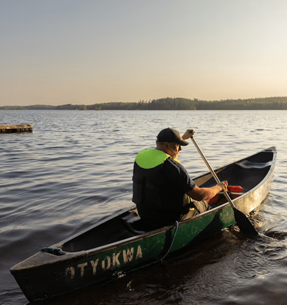
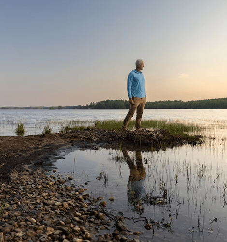
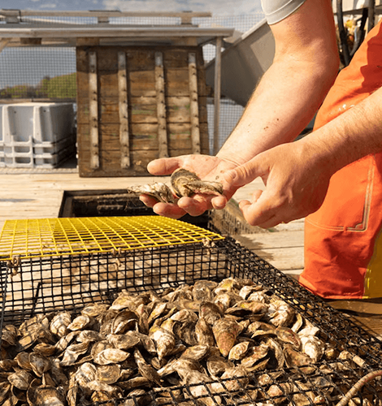
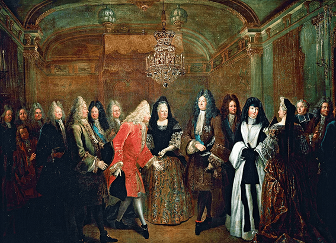
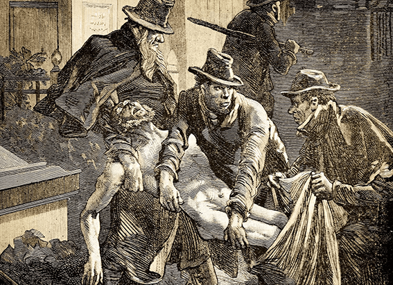

NATIONAL GEOGRAPHIC
Fireflies and lighthouses A tour of Maine’s MidCoast
TRAVEL
- 
- 
- 
The shoreline of Pemaquid Pond in Bremen, Maine at Otyokwa.
But it's the darker twilight and clear night skies that captivated Acacia Johnson when she first visited Maine as a photography student. Spending the summer in Rockport as an intern with Maine Media workshops, she experienced nights dotted with fireflies and stars, warm enough to take a lake swim. For Johnson, who grew up in Anchorage, Alaska where summer is midnight sun season it was a revelation
"When I think back on that first summer in Maine, it was this experience of childlike wonder at things in the natural world that were actually very simple but, to me, seemed totally magical," Johnson says. The documentary photographer recently revisited Maine for a statewide tour. The journey reminded her, among other things, of what it was like to play with that remarkable light as a photography student years earlier.
"Being able to have these dreamy blue hours and colorful transitional light experiences almost every day in a variety of landscapes, everything from coastlines to mountains to pine forests and lakes there was just so much there," she recalls. "It was very inspiring to me at the time."
Fresh, delicious wonders along the coast
Johnson's trip began in Maine's MidCoast and Islands region, where she boarded an oyster boat in the village of Pemaquid with knowledgeable captains to learn how Johns River Oyster brings its oysters from nursery to market. The farm tour is one of many available along the Maine Oyster Trail, where visitors learn and taste their way through the state's four oyster-producing regions.
"I had no idea how little I knew about oysters before this experience," Johnson says. "It was fun spending time with people who had a lifetime connection to the place where they live and work. It added a layer of depth to the time there."
A peaceful lakeside retreat
Johnson also loved staying at Otyokwa, a former boys' camp for city kids established in 1935. Today, the 40-acre property next to Pemaquid Pond offers stays at its lakeside cabins, farmhouse, and two houseboats.
The stay at Otyokwa, with the chance to go canoeing and swimming and just generally be immersed in that incredible light, Johnson notes, is part of what made the spot so special.
Special as it is, Otyokwa is one of many lodging options that give Maine visitors a way to slow down and appreciate the views. You can pitch a tent on spectacular campgrounds, stay at a bed and breakfast, or take on an outdoor adventure resort.
The scenes took Johnson back to that first formative trip to Maine. At the end of that summer, she channeled that "blue hour experience energy," as she calls it, into an Arctic photography expedition that became her first successful project.
"It was this immersive sensory experience that, in many ways, sparked so much of the rest of what happened in my photo career," Johnson says.
Lighthouse views
At 3,478 miles, Maine has more coastline than any other state in the contiguous United States, giving it a wealth of both vistas and delicious seafood. Visitors to MidCoast and Islands find not only oysters but lobster shacks, storied dining destinations like The Lost Kitchen, and classic spots like Wasses, famed for its hot dogs.
Johnson also visited Pemaquid Point Lighthouse Park, with its Fishermen’s Museum and a light tower originally commissioned by John Quincy Adams in 1827 that is still active today. The museum preserves the fishing and marine heritage of the Bristol area, including captains’ logs and photos.
Comments :
- john Very good
- john Very good
Leave a Reply
Your email address will not be published. Required fields are marked*
Related posts:
-
This French king took men’s hair to new heights
Dolly Parton is credited with the phrase “the higher the hair, the closer to God,” but King Louis XIV might have shared her sentiments some 300 years earlier. The French king, famous for his ostentatious sense of style
View article -
They robbed graves and got away with it until some turned to murder
When a poor person’s body was laid to rest in Britain during the 18th and 19th centuries, there was a good chance it had no rest at all. Rather than settling into an eternal sleep beneath the earth, their bodies
View article -
This Belgian princess became empress of Mexico. It all fell apart from there
Intelligence, love, and beauty seemed to be the happy lot of the princess of Belgium. She had managed to avoid the loveless marriages that were often the fate of royalty : Her betrothal at age 17 to Maximilian, brother of the Austrian emperor
View article